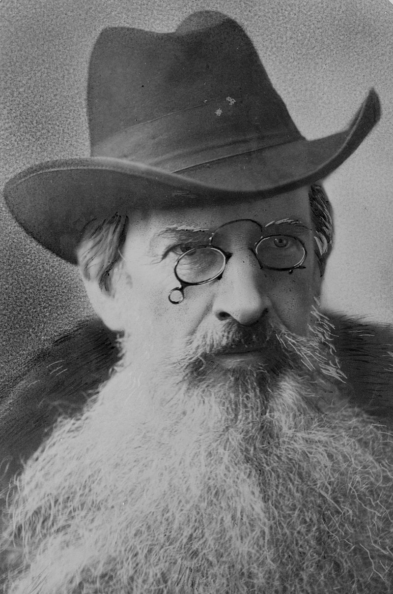

AT&T

prehistory
In 1876,Alexander Graham Bell rushed to the patent office to claim his invention of the telephone. Before that, the only way to have a conversation with someone in real-time was in person. Now, it’s hard to imagine a world where
technology isn’t driving our communications. This invention led to the creation of AT&T.
Industries:
- Telecommunications
- Technologies:
- Network Systems International
- Microelectronica de Espana
- Goldstar Semiconductor
- Mass media
Founderes
- Alexander Graham Bell
From January 1, 1984, until mid-1986, AT&T Technologies continued to manufacture telephones that had been made before 1984 by Western Electric under the Western Electric marking. "Bell System Property - Not For Sale" markings were eliminated from
all telephones, replaced with "AT&T" in the plastic housing and "Western Electric" in the metal telephone bases.

- Gardiner Greene Hubbard
Gardiner Greene Hubbard (August 25, 1822 – December 11, 1897) was an American lawyer, financier, and community leader.[1]

Table NO.1
| ID |
First name |
Last name |
Email |
Phone |
| t1 |
t2 |
t3 |
t4 |
d5 |
| d1 |
d2 |
d3 |
d4 |
| t1 |
t2 |
t3 |
t4 |
| d1 |
d2 |
d3 |
d4 |
d5 |
| Written by .... ************************************************** |